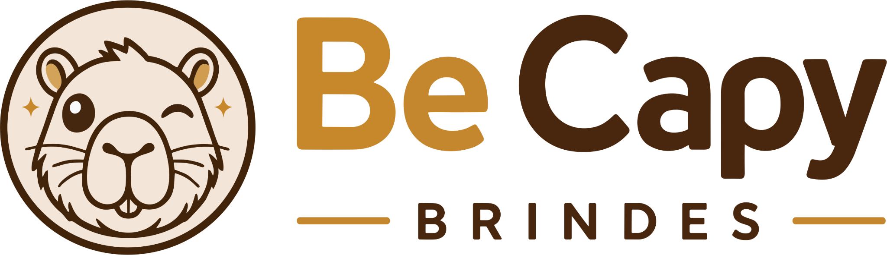
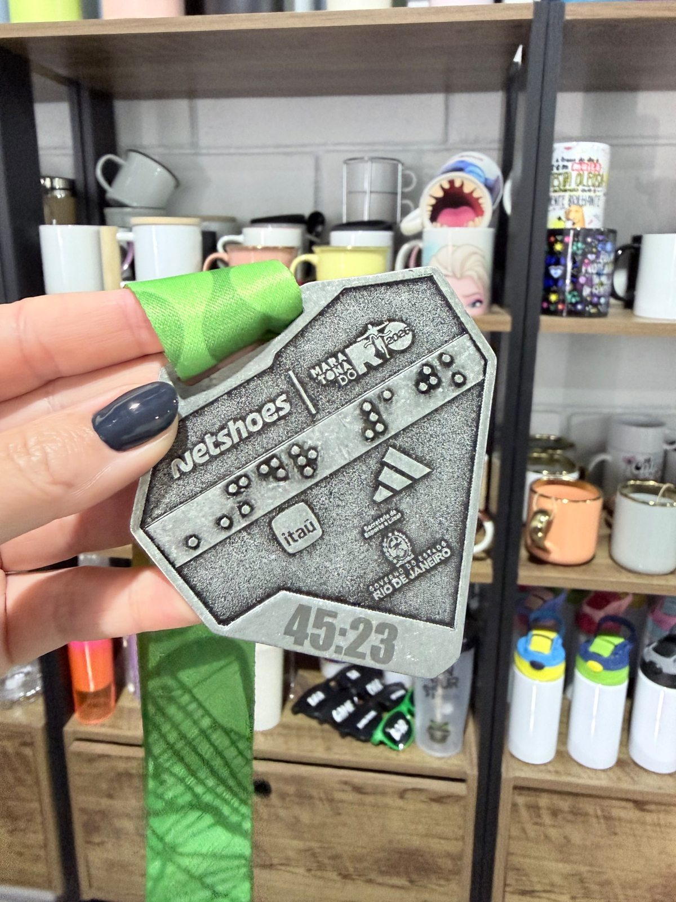
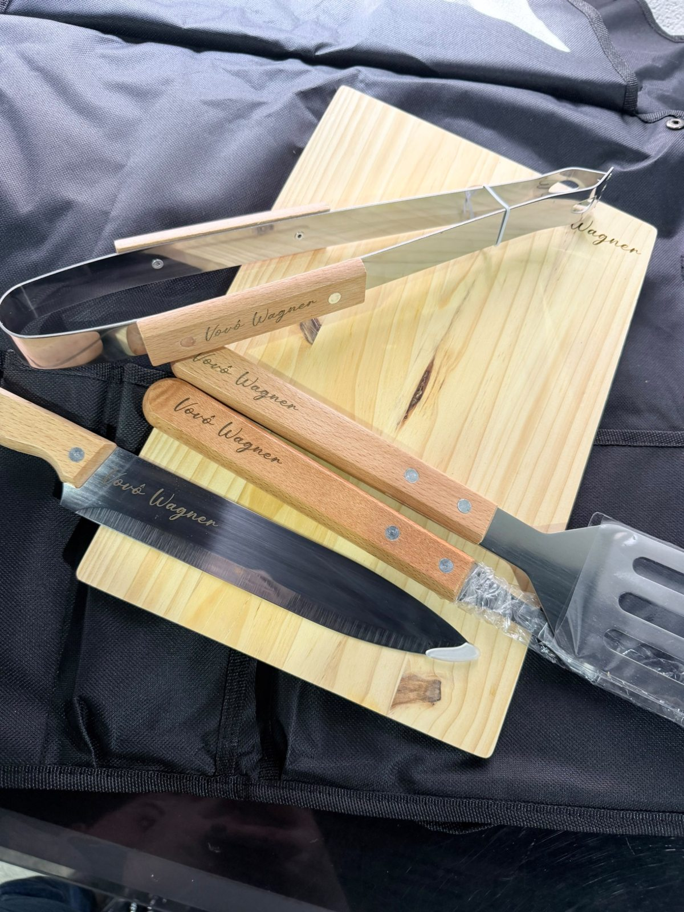
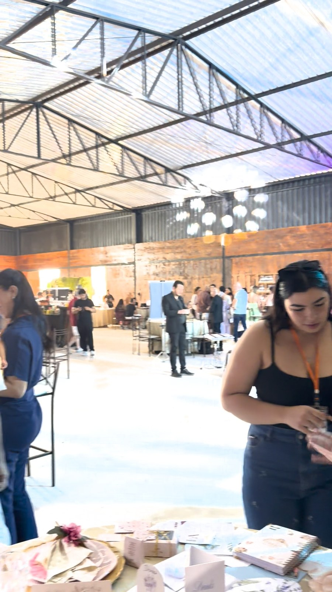
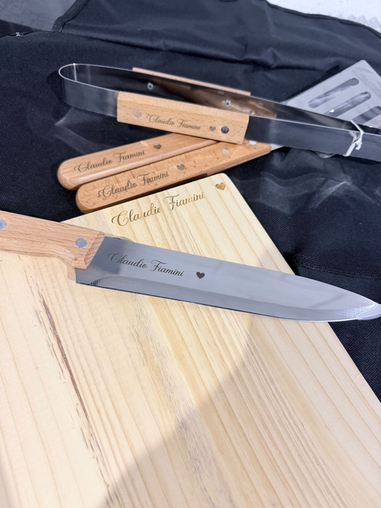
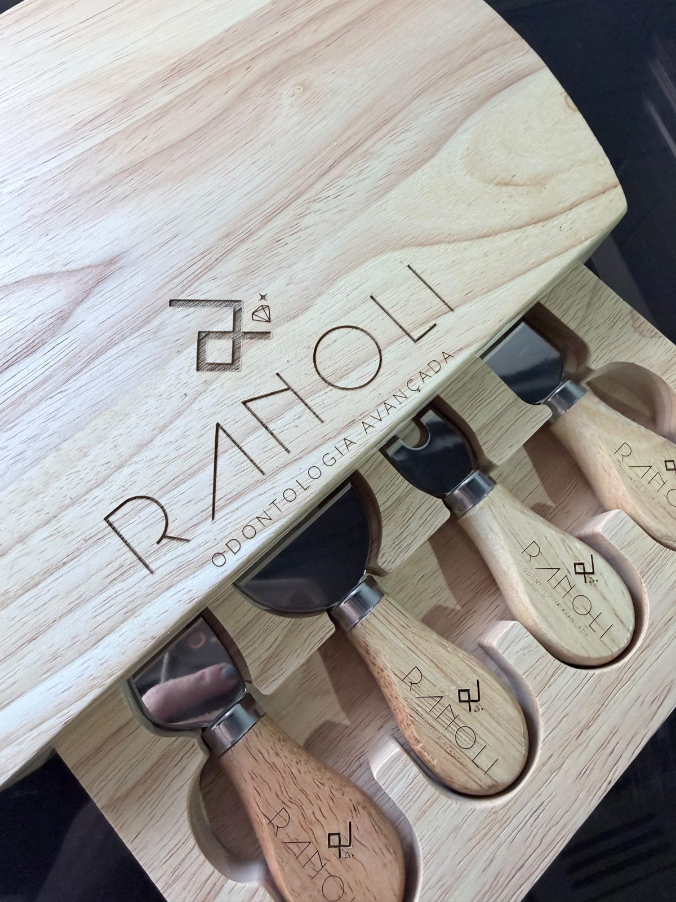

01 • CORRIDAS
Medalhas de finisher
Em corridas de rua de 5 km, 10 km, meia maratona e outras provas, podemos personalizar medalhas e peças da experiência com nome, tempo, distância, data ou identidade da corrida.

GRAVAÇÃO A LASER EM EVENTOSLevamos máquinas de gravação a laser até o local e personalizamos os produtos na hora, diante dos convidados. Uma experiência que acontece de verdade — e que cada pessoa leva para casa.

PERSONALIZAÇÃO AO VIVO
CHURRASCO
CASAMENTOEm vez de entregar um produto pronto, o convidado vê a personalização nascer diante dele. Isso cria curiosidade, interação e uma lembrança ligada ao momento em que a peça foi gravada.
O formato pode ser adaptado ao tipo de evento, ao produto escolhido e ao fluxo de pessoas. Estes são alguns dos cenários em que a personalização ao vivo pode ganhar mais destaque.
Em corridas de rua de 5 km, 10 km, meia maratona e outras provas, podemos personalizar medalhas e peças da experiência com nome, tempo, distância, data ou identidade da corrida.
Facas, tábuas, kits e acessórios personalizados em confraternizações, festivais, campeonatos de churrasco e experiências gastronômicas.
Taças, copos, lembranças e outros itens gravados com nomes, iniciais, data do casamento ou uma mensagem especial — inclusive como atração durante a festa.
Copos térmicos, garrafas, canetas, chaveiros, placas e outros produtos compatíveis podem entrar em shows, jogos, eventos corporativos e ativações de marca. A estrutura é adaptada ao conceito e ao fluxo do evento.
Registros da nossa operação e exemplos reais de peças personalizadas. Os vídeos são reproduzidos sem som e podem ser pausados ou ampliados.
Equipamento instalado no evento e gravação realizada diante dos convidados.
Medalha de corrida brasileira com tempo personalizado. A gravação de nomes, tempos e outros dados depende da peça e da dinâmica de cada prova.
Facas, tábuas e acessórios com gravação em madeira e metal. Fotos reais de personalizações feitas pela Be Capy.


Veja registros de personalização e produção relacionados às nossas experiências corporativas.
Planejamos a operação antes do evento para que a personalização aconteça com organização e o público perceba o processo como parte da experiência.
Data, local, público, duração, produto e objetivo da ativação.
Escolhemos material, área de gravação, arte e dinâmica de atendimento.
Levamos os equipamentos e organizamos a estação de gravação conforme o projeto.
A personalização acontece diante dos convidados e o item segue pronto para ser entregue.
Envie a data, cidade, tipo de evento e o que você imagina personalizar. A Be Capy avalia o projeto e orienta a melhor estrutura.